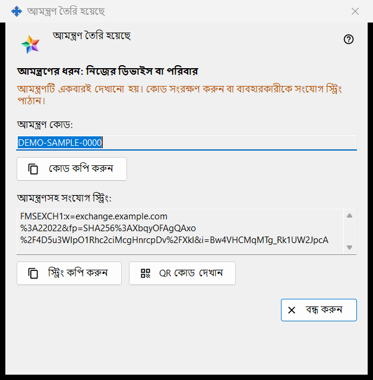
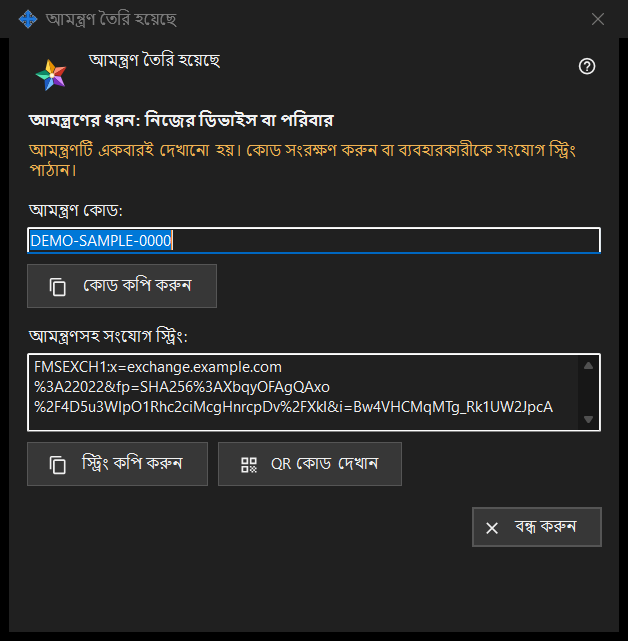

আমন্ত্রণ তৈরি হয়েছে
এটি কীসের জন্য
আমন্ত্রণ তৈরি করুন উইন্ডোতে তৈরি করুন চাপার ঠিক পরে এই উইন্ডো নতুন আমন্ত্রণটি একবারই দেখায়। এতে থাকে একবার ব্যবহারের কোড এবং, এক্সচেঞ্জ সার্ভার প্রোগ্রাম তৈরি করতে পারলে, কোড-সহ একটি সংযোগ স্ট্রিং।


এই ক্রমে
- যে লাইন আমন্ত্রণের ধরন: দিয়ে শুরু, তা দেখে বাছা ধরন মিলিয়ে নিন।
- কোড কপি করুন চাপুন, বা আমন্ত্রণ-সহ স্ট্রিংয়ের জন্য স্ট্রিং কপি করুন, বা QR কোড দেখান।
- এটি এমন মাধ্যমে ব্যক্তিকে দিন, যাকে আপনি বিশ্বাস করেন।
- বন্ধ করুন চাপুন। একই কোড আর দেখানো হয় না।
উপাদানসমূহ
ধরন ও সতর্কবার্তা
গাঢ় অক্ষরের লাইনটি আপনার বাছা ধরন জানায়, যেমন আমন্ত্রণের ধরন: নিজের ডিভাইস বা পরিবার। উইন্ডো বন্ধ হলে কোড ও স্ট্রিং তা থেকে মুছে যায়। একটি হারিয়ে গেলে তালিকায় আমন্ত্রণটি প্রত্যাহার করে নতুন তৈরি করুন। সতর্কতার রঙের লাইনে লেখা: আমন্ত্রণটি একবারই দেখানো হয়। কোড সংরক্ষণ করুন বা ব্যবহারকারীকে সংযোগ স্ট্রিং পাঠান।
আমন্ত্রণ কোড
আমন্ত্রণ কোড: শুধু-পাঠযোগ্য ঘর, যেখানে কোড দেখা যায়। বোতাম কোড কপি করুন এটিকে গোপন তথ্য হিসেবে কপি করে, Windows ক্লিপবোর্ড ইতিহাস (Win+V) ও ক্লাউড ক্লিপবোর্ড এড়িয়ে; নিচের লাইনে এর একটি দেখা যায়: আমন্ত্রণ কোড ক্লিপবোর্ডে কপি করা হয়েছে। অথবা: কোড ক্লিপবোর্ডে কপি করা যায়নি।
আমন্ত্রণসহ সংযোগ স্ট্রিং
আমন্ত্রণসহ সংযোগ স্ট্রিং: কেবল তখনই দেখা যায়, যখন স্ট্রিং তৈরি করা গেছে। এটি সার্ভারের নাম জানায় এবং কোড বহন করে, তাই কোডের মতোই সতর্কভাবে সামলান: বোতাম স্ট্রিং কপি করুন এটিকেও গোপন তথ্য হিসেবে কপি করে। এতে আপনার অ্যাকাউন্টের পাসওয়ার্ড নেই।
QR কোড
বোতাম QR কোড দেখান আমন্ত্রণসহ স্ট্রিংয়ের একটি ছবি খোলে। যে-কেউ এটি দেখলে আমন্ত্রণটি ব্যবহার করতে পারে, তাই যার জন্য এটি, কেবল তাকেই দেখান। ছবি তৈরি না হলে লাইনে লেখা আসে: QR কোড এখন উপলব্ধ নয়।
অন্যজন কী করেন
এক্সচেঞ্জ অ্যাকাউন্ট উইন্ডোতে (সাইন ইন..) ব্যক্তিটি বোতাম পেস্ট করুন দিয়ে স্ট্রিং পেস্ট করেন বা সংরক্ষিত ফাইল খোলেন। আমন্ত্রণ-বহনকারী স্ট্রিং উইন্ডোকে নিবন্ধনে নিয়ে যায়: তিনি একটি লগইন বেছে নেন, পাসওয়ার্ড দুবার লেখেন এবং অ্যাকাউন্ট তৈরি করুন চাপেন। ভুল বা আগেই ব্যবহার হওয়া আমন্ত্রণ, কিংবা নেওয়া লগইন বার্তা-সহ প্রত্যাখ্যাত হয়।
বন্ধ করুন
বোতাম বন্ধ করুন উইন্ডো শেষ করে এবং তা থেকে কোড ও স্ট্রিং মুছে দেয়। এখানে আর কিছু সংরক্ষিত হয় না।
ম্যানেজার সেটিংস · SFTP শেয়ারিং সেটিংস · এক্সচেঞ্জ সার্ভার সেটিংস